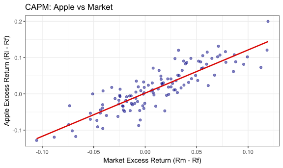

Multiple Regression
FMB819: R을 이용한 데이터분석
Today’s Agenda
- 단순회귀에서 다중회귀로: CAPM에서 Fama-French 3-Factor 모형으로
- 연속 변수와 더미 변수 해석: 액티브 펀드 vs 패시브 펀드
- 더미 변수 함정 (Dummy Variable Trap)
- 누락 변수 편의 (Omitted Variable Bias): 가치주(Value) 팩터를 빼먹으면 생기는 일
- 조정된 \(R^2\) (Adjusted \(R^2\)): 팩터가 많다고 무조건 좋은가?
자산 가격 결정 모형의 진화
자본자산가격결정모형 (CAPM)
- 개별 주식이나 펀드의 수익률은 시장 전체의 움직임(Market Risk) 에 의해서만 결정된다고 가정.
- 단순 선형 회귀(Simple Linear Regression) 를 사용하여 시장 베타(\(\beta\))를 추정.
\[R_{i,t} - R_{f,t} = \alpha_i + \beta_M(R_{M,t} - R_{f,t}) + \epsilon_{i,t}\]
- \(\beta_M\): 시장이 1% 움직일 때 내 주식이 몇 % 움직이는가? (체계적 위험)
- \(\alpha_i\): 시장의 움직임으로 설명되지 않는 펀드 매니저의 순수 역량 (초과 수익)
단순 선형 회귀: Apple 주식의 CAPM 추정

단순 선형 회귀: R 코드와 해석
# CAPM 회귀분석 실행
capm_model <- lm(aapl_excess ~ mkt_excess, data = finance_data)
summary(capm_model)$coefficients
## Estimate Std. Error t value Pr(>|t|)
## (Intercept) 0.001987433 0.002874372 0.6914321 4.906522e-01
## mkt_excess 1.190026871 0.062733284 18.9696248 1.226024e-37
해석:
- 시장 베타 (\(\beta\)):
mkt_excess의 계수가 약 1.2입니다. 시장이 1% 상승할 때 Apple 주식은 평균적으로 1.2% 상승합니다.
- 알파 (\(\alpha\)): 절편(Intercept) 값입니다. 시장의 움직임을 통제하고도 남은 초과 수익을 의미합니다.
하지만 이 수익률이 정말 시장 리스크 하나로만 다 설명될까요?
다중 회귀 분석의 필요성: Fama-French 3-Factor
- 문제 제기: 소형주(Small Cap)와 가치주(Value)가 역사적으로 시장 베타 대비 더 높은 수익을 내는 현상(이상 현상, Anomaly)이 발견됨.
- 해결책: 시장 변수 외에 기업 규모(SMB) 와 가치(HML) 를 독립 변수로 추가!
추정하려는 다중 회귀 모델 (Fama-French 3 Factor Model)
\[R_{i,t} - R_{f,t} = \alpha_i + \beta_1 MKT_t + \beta_2 SMB_t + \beta_3 HML_t + \epsilon_{i,t}\]
- 이제 \(\beta_1\)은 규모(SMB)와 가치(HML) 요인이 일정하게 유지된 상태에서 시장이 1단위 변할 때의 순수한 효과를 의미합니다. (Ceteris Paribus)
Fama-French 3-Factor 모형 추정하기
# FF3 다중 회귀분석
ff3_model <- lm(aapl_excess ~ mkt_excess + smb + hml, data = finance_data)
summary(ff3_model)$coefficients
## Estimate Std. Error t value Pr(>|t|)
## (Intercept) 0.005581102 0.001913474 2.916738 4.247740e-03
## mkt_excess 1.217832538 0.041613488 29.265332 2.177067e-55
## smb -0.360165853 0.063765246 -5.648310 1.172682e-07
## hml -0.535461863 0.045040034 -11.888576 8.418590e-22
Questions
smb와 hml의 계수가 음수(-)입니다. 이는 Apple 주식의 특성에 대해 무엇을 말해줍니까?- 단순 회귀(CAPM)와 비교했을 때 시장 베타(
mkt_excess 계수)는 어떻게 변했나요? 그 이유는 무엇일까요?
해석: 독립 변수들 간의 통제
- HML = -0.48: 가치주 팩터 수익률이 상승할 때 Apple의 수익률은 하락하는 경향이 있습니다. 즉, Apple은 전형적인 성장주(Growth Stock) 처럼 행동합니다. 다른 모든 조건(시장, 규모)이 동일할 때 성립합니다.
- 직관적 의미: 단순히 “시장 베타가 높아서 수익이 높다”가 아니라, “이 주식은 성장주 팩터에 노출되어 있기 때문에 성과가 났다”고 성과 요인을 분해(Decomposition) 할 수 있습니다.
Task 1: 팩터 모형 실습
- 본인의 R 환경에서 제공된 데이터를 불러오세요.
- 가상의 워렌 버핏 포트폴리오(
brk_excess)가 데이터셋에 있다고 가정해 봅시다. 이 포트폴리오 수익률을 종속 변수로 두고 CAPM을 먼저 추정하세요.
- 동일한 종속 변수에 대해 Fama-French 3 Factor 모형을 추정하세요.
- 토론: 버핏의 CAPM ’알파(초과 수익)’는 FF3 모형으로 넘어갔을 때 어떻게 변했습니까? 만약 알파가 줄어들고 HML(가치) 팩터의 양의 계수가 크게 나왔다면, 버핏의 투자 전략을 어떻게 평가해야 할까요?
(힌트: 뛰어난 종목 선정 능력인가, 아니면 단순히 가치주 프리미엄을 기계적으로 취한 것인가?)
더미 변수 (Dummy Variables)의 활용
- 금융 데이터에는 수익률, 금리 같은 연속형 변수도 있지만, 범주형 변수도 매우 중요합니다.
- 예: 펀드의 종류 (1 = 액티브 펀드, 0 = 패시브 인덱스 펀드)
회귀 모델:
\[FundReturn_i = b_0 + b_1 ExpenseRatio_i + b_2 ActiveDummy_i + \epsilon_i\]
ActiveDummy = 1: 액티브 펀드ActiveDummy = 0: 인덱스 펀드
더미 변수의 시각적 해석
\[FundReturn_i = \color{#d96502}{b_0} + \color{#d90502}{b_1}ExpenseRatio_i + \color{#027D83}{b_2}ActiveDummy_i + \epsilon_i\]
- \(\color{#d96502}{b_0}\): 수수료(Expense Ratio)가 0인 패시브 펀드의 예상 수익률.
- \(\color{#d90502}{b_1}\): 기울기. 수수료가 1% 증가할 때 수익률이 어떻게 변하는지 나타냅니다. (액티브/패시브 무관하게 동일하다고 가정)
- \(\color{#027D83}{b_2}\): 수수료가 동일할 때, 액티브 펀드가 패시브 펀드 대비 평균적으로 거두는 수익률의 차이 (Y절편의 이동).
만약 \(\color{#027D83}{b_2}\)가 통계적으로 유의미한 음수(-)라면? 매니저의 종목 선정(Active)이 오히려 성과를 갉아먹는다는 뜻입니다!
더미 변수 함정 (Dummy Variable Trap)
- 만약
Is_Active 변수와 Is_Passive 변수를 동시에 회귀 분석에 넣으면 어떻게 될까요?
# 에러를 유발하는 로직 (완전 다중공선성)
lm(return ~ expense + is_active + is_passive, data = fund_data)
is_active + is_passive = 1 (항상 성립). 이를 완전 다중공선성(Perfect Collinearity) 이라고 합니다.- 해결책: 범주가 \(N\)개일 경우, 더미 변수는 반드시 \(N-1\)개만 모델에 포함해야 합니다. 제외된 1개는 기준 그룹(Reference Group) 이 되며, 모든 계수는 이 기준 그룹 대비 얼마나 높은지/낮은지로 해석됩니다.
누락 변수 편의 (Omitted Variable Bias, OVB)
- 회귀 분석에서 종속 변수에 영향을 미치는 중요한 변수를 누락(Omit) 했을 때 발생하는 편향.
상황: 펀드 규모(Fund Size)가 수익률에 미치는 영향을 분석하려고 합니다. \[Return = b_0 + b_1 Size + e\]
- 분석 결과 큰 펀드일수록 수익률이 낮게 나왔습니다 (\(b_1 < 0\)). 정말 규모가 커져서 성과가 나빠진 것일까요? (규모의 불경제)
- 만약 ’펀드의 나이(Age)’를 누락했다면?
- 오래된 펀드일수록 규모가 큽니다. (Size와 Age는 양의 상관관계)
- 오래된 펀드는 과거의 생존자 편향으로 인해 수익률 둔화가 관찰될 수 있습니다.
- 결국 Size 계수는 Age의 부정적 효과를 뒤집어쓰고 과도하게 낮게 추정된 것(OVB)일 수 있습니다.
OVB 공식과 직관
\[
\text{OVB} = \underbrace{\text{다중 회귀에서 누락된 변수의 계수 (진짜 효과)}}_{\color{#d90502}{c_2}} \times \underbrace{\text{누락 변수와 포함된 변수 간의 관계}}_{\color{#d96502}{d_1}}
\]
- 부호 예측하기:
- 만약 수수료(Expense)가 수익률에 미치는 영향을 추정할 때, 매니저의 ’스킬(Skill)’을 누락했다면?
- Skill이 높을수록 수익률이 높습니다 (+)
- Skill이 높은 매니저일수록 수수료를 비싸게 받습니다 (+)
- OVB = (+) * (+) = 양수.
- 결과: 단순 회귀 분석에서는 수수료가 비쌀수록 펀드 성과가 좋다는 잘못된 결론(과대 추정)에 도달할 위험이 큽니다!
수정된 결정 계수 (Adjusted \(R^2\))
- 모형에 팩터를 3개, 4개, 100개 계속 추가하면 설명력(\(R^2\))은 기계적으로 무조건 상승합니다.
- 가짜 요인(예: 펀드 매니저의 별자리)을 넣어도 \(R^2\)는 올라갈 수 있습니다.
- 수정된 \(R^2\) (Adjusted \(R^2\)): 변수의 개수가 늘어나는 것에 패널티(Penalty) 를 부여합니다.
- 새로 추가된 팩터가 그 패널티를 극복할 만큼 유의미한 설명력을 제공할 때만 수치가 증가합니다. 금융 데이터의 다중 회귀 모델을 비교할 때는 반드시 Adjusted \(R^2\)를 확인해야 합니다.
Task 2: 규제와 펀드 운용 행태 (Case Study)
여러분은 SEC의 규제 변화가 뮤추얼 펀드의 포트폴리오 매매 회전율(Turnover)에 미친 영향을 분석하고자 합니다.
- 데이터셋에는
Turnover (종속변수), Fund_Size, Expense_Ratio, 그리고 2004년 이후 여부를 나타내는 더미 변수 Post_2004 (1이면 규제 이후, 0이면 규제 이전)가 있습니다.
Turnover를 Post_2004 하나로만 단순 회귀분석해 봅니다. 규제 이후 펀드의 회전율은 평균적으로 어떻게 변했나요?- 여기에
Fund_Size와 Expense_Ratio를 통제 변수로 추가한 다중 회귀분석을 수행하세요. Post_2004의 계수가 변했습니까? 왜 그렇게 변했을지 누락변수 편의(OVB) 관점에서 토론해 봅시다.
- (도전 과제) 대형 펀드와 소형 펀드가 규제에 다르게 반응했을 수 있습니다.
Post_2004와 Fund_Size의 곱인 상호작용항(Interaction Term) 을 추가해보고 그 금융적 의미를 해석해 보세요.